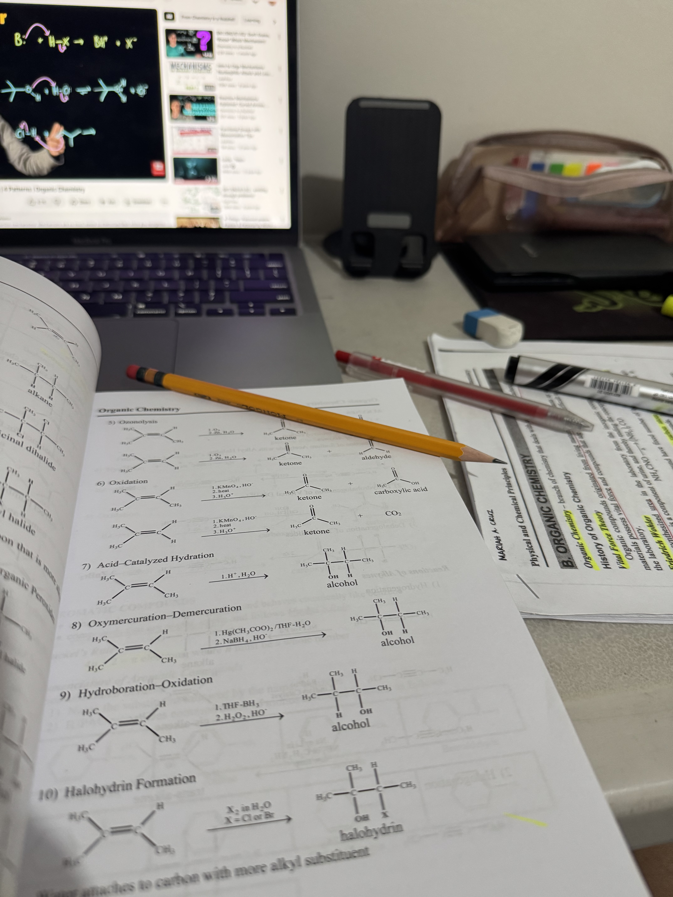

Entry 5
A Step Closer to Reality!
This semester, we are required to take this course on mock boards
for us to be prepared for the upcoming Chemical Engineering Licensure Examination
in November 2026. Every week, we have a series of quizzes and discussions highlighting the
topics from 1st year to 4th year. Coming from a batch who underwent online class for their first
2 years in college, I realized how I lack skills on the fundamentals of engineering and chemistry.
I can’t blame anyone or myself for it because that was a lot of adjustment for me. However, reality hits
that I need to keep up with this fast-paced semester by studying extra hard. Right now, I am still finding my
good study habits and peak study time. Maybe for now, it is best for me to pause and reflect as I navigate my path.
